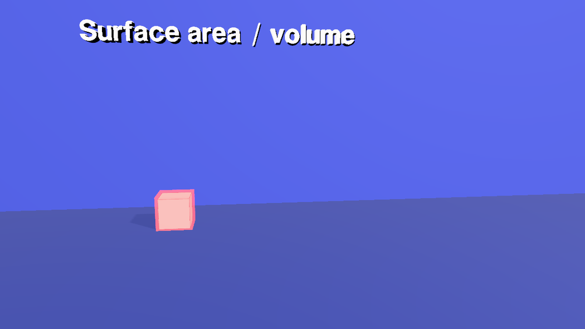
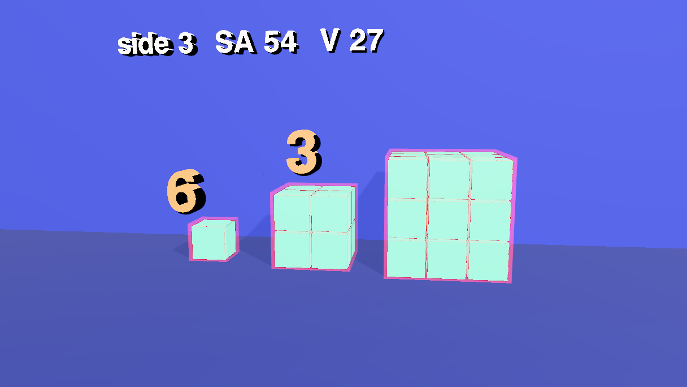
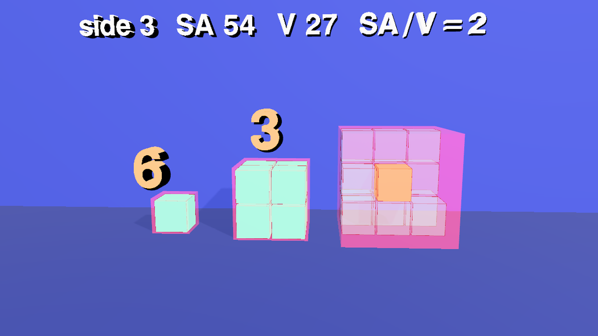
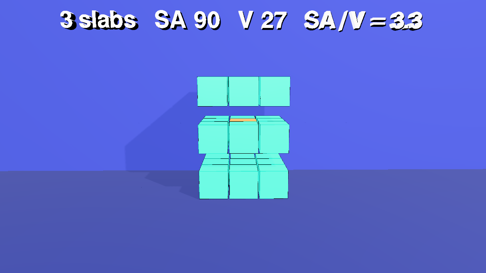
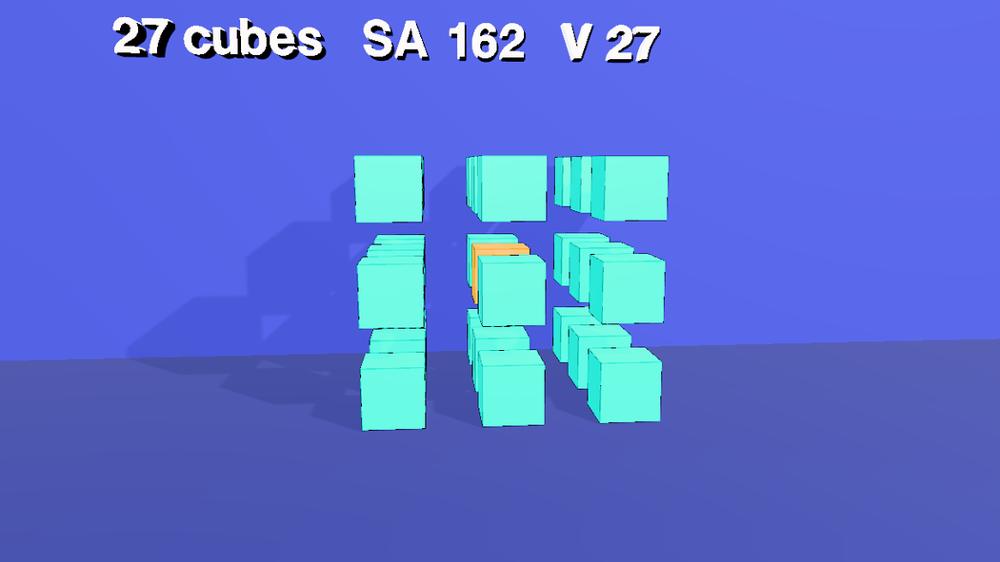
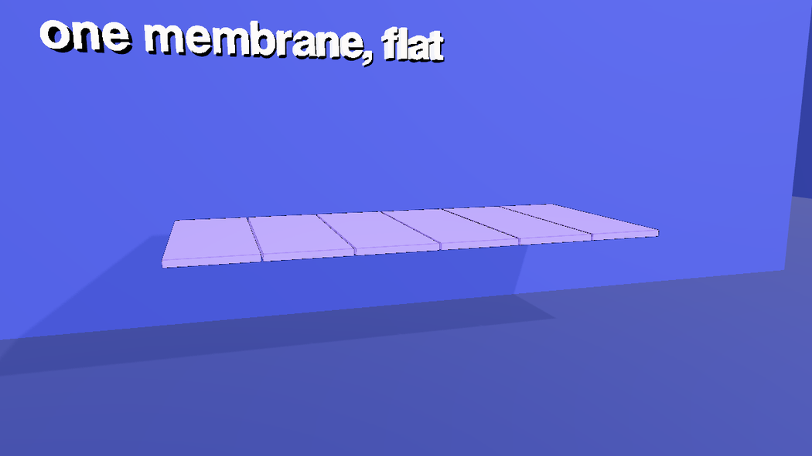
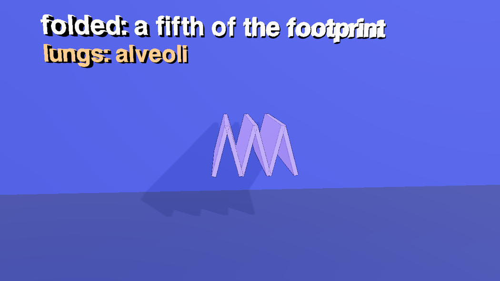
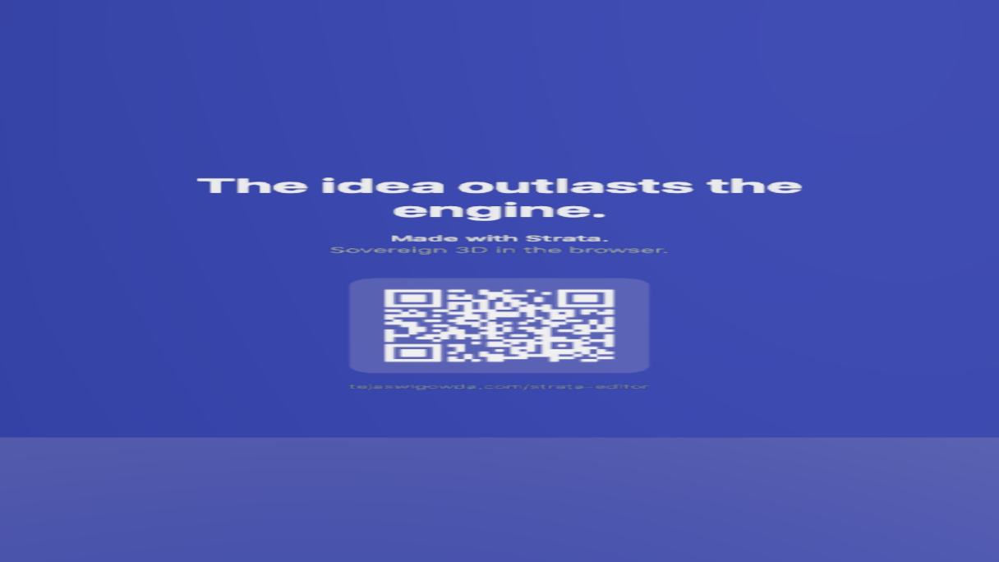

Why cells are small: surface area to volume
A 98-second visual argument that a bigger thing has less surface for its size. Measuring every length in unit-cube widths, a cube of side 1 has surface area 6 and volume 1, so a surface-to-volume ratio of 6 per unit-cube width; a cube of side 2 has 24 and 8, a ratio of 3; a cube of side 3 has 54 and 27, a ratio of 2. The surface grows with the square of the side and the volume with the cube, so the ratio is proportional to 1 / side, in any units: double the side and it halves. That is why cells stay small and divide: a cell lives through its skin. Cut the big cube into 27 small ones and the volume is still 27 but the surface is 162, a ratio of 6 again. Life uses the other trick too: fold the surface (the cristae of a mitochondrion, the alveoli of a lung). It is the (a + b)³ tutorial's machinery (unit cubes with black borders, a room, shadows, an x-ray, a camera sequence) pointed at a different idea. Open the editor, load an empty scene, open the Shell tab and paste each block in order, or open the scene file, area-volume.json (the last step).
1 The idea
Count unit squares on the outside (SA) and unit cubes on the inside (V) of a cube of side s. Six faces of s × s squares give SA = 6s²; V = s³; so SA / V = 6 / s.
The units. SA / V is an area over a volume, so it has the dimensions of 1 / length, and the numbers 6, 3 and 2 below belong to the cube and the ruler: here the ruler is one unit cube, so they are ratios per unit-cube width. Measure the same cubes in millimetres and every ratio is a thousand times smaller. What does not depend on the units is the shape of the relation, SA / V ∝ 1 / s: double the side and the ratio halves, whatever the unit. Do not carry the bare 6, 3 and 2 over to a real cell; carry the trend.
| Side | Face | SA | V | SA / V |
|---|---|---|---|---|
| 1 | 1 square | 6 | 1 | 6 |
| 2 | 4 squares | 24 | 8 | 3 |
| 3 | 9 squares | 54 | 27 | 2 |
A cell takes in food and oxygen and gets rid of waste through its surface, but it needs them in proportion to its volume. When the ratio falls, the middle of the cell is farther and farther from the skin. Dividing is the cheap way out. Cut the side-3 cube into 27 unit cubes (three slabs, nine bars, 27 cubes) and the volume is unchanged, but the surface is now 27 × 6 = 162, a ratio of 6. The same volume, three times the skin. This sequence is the film's dimensionally cleanest argument. The volume stays at 27 throughout, so what is compared is a surface of 54 against a surface of 162 for the same amount of stuff: a ratio of 3 to 1 that has no unit attached and needs no ruler. The growing sequence (sides 1, 2, 3) shows the trend; the division sequence shows the same thing without reference to any unit. The other way out is to keep the volume and fold the surface: a flat membrane folded like a concertina takes a fraction of the room.
The numbers are the film's, not a model of a real cell (a real cell is about 10⁻⁵ metres across, and the cubes are in tiles). The plan for the clock, with the times the voice sets (the cues were timed first, and every beat sits on its cue), in seconds:
| Time | What happens |
|---|---|
| 0.8 | The title Surface area / volume over the empty room |
| 6 – 16 | A cube of side 1; its skin (a coral shell) appears as the voice says surface 6; then 6 is written over it |
| 19 – 27 | Side 2: the cube, its skin, 3 |
| 29 – 37 | Side 3: the cube, its skin, 2 |
| 53 | The x-ray: the 26 outer cubes of the big cube turn to glass, and one gold cube is left in the middle: the middle starves |
| 57.9 | The cell divides: the small cubes go, the big cube moves to the middle and is cut, in three steps, into slabs (60.3), bars (61.9) and 27 cubes (63.4) |
| 73 | SA/V = 6 again |
| 75.6 – 91 | The cubes go. A flat membrane of 6 panels folds like a concertina, twice; mitochondria: cristae, lungs: alveoli, small, or folded |
| 95.8 | Cut to the end card |
The cameras cut at 39.4, 75.6 and 95.8 s. Everything below is a paste into the Shell, in order, into a scene that is empty.
2 A room, a wall and a floor
The room of the other shorts, with the floor at y = 0 so that the cubes stand on it, and a wall a little behind them for the shadows. The wall is only 26 wide, so the end camera does not see it edge-on.
// a room around the scene, a floor under the cubes and a wall just behind them, for the shadows to land on
const room = new Mesh(new BoxGeometry(80, 40, 80),
new MeshStandardMaterial({ color: 0x2b3680, roughness: 0.95, metalness: 0, side: THREE.BackSide }));
room.name = 'Room';
room.position.set(0, 2, 0);
room.receiveShadow = true;
editor.execute(new AddObjectCommand(editor, room));
const wall = new Mesh(new PlaneGeometry(26, 30), new MeshStandardMaterial({ color: 0x303b92, roughness: 0.95, metalness: 0 }));
wall.name = 'Wall';
wall.position.set(0, 6, -2.6); // a little behind the back of the cubes; only 26 wide, so the end camera does not see it edge-on
wall.receiveShadow = true;
editor.execute(new AddObjectCommand(editor, wall));
const floor = new Mesh(new PlaneGeometry(60, 60), new MeshStandardMaterial({ color: 0x232d70, roughness: 0.9, metalness: 0 }));
floor.name = 'Floor';
floor.rotation.x = -Math.PI / 2; // the cubes stand on it: y = 0
floor.receiveShadow = true;
editor.execute(new AddObjectCommand(editor, floor));
// one key light up and to the right, in front of the cubes, so shadows fall down and to the left; one soft fill
const key = new PointLight(0xfff1dd, 4.5, 0, 0);
key.name = 'KeyLight';
key.position.set(7, 11, 11);
key.castShadow = true;
key.shadow.mapSize.set(2048, 2048);
key.shadow.bias = -0.0004;
key.shadow.intensity = 0.6;
key.shadow.radius = 4;
key.shadow.camera.near = 0.5;
key.shadow.camera.far = 90;
editor.execute(new AddObjectCommand(editor, key));
editor.execute(new AddObjectCommand(editor, Object.assign(new THREE.HemisphereLight(0xdde6ff, 0x6a78c8, 1.2), { name: 'FillLight' })));3 One cube, three sizes
A cube of side s is a group of s³ unit cubes, so the faces are visibly a grid of s² squares each, and counting the squares is counting the surface area. Every unit cube has a black border (hasEdgeOutline), which draws the grid, and the cubes share their materials: the film has ten materials in all, made once at the top of the block (PAL) and handed to every mesh that uses them, never one per mesh (a new material per mesh defeats the serializer and the glTF exporter, which share by object identity; this scene's first version had 54). A material belongs to every mesh that holds it, so what has to change on its own gets its own: the 26 outer cubes of the big cube fade to glass (step 10), so they have a material (aquaBig) that the small cubes (aquaSmall) do not share; the middle cube shares the gold of the gold labels, which is possible only because neither ever fades. The three cubes stand in a row (SIDES says where), and share one geometry. The one cube in the middle of the side-3 cube is gold: it is the cell's middle, the cube that is a long way from the skin. The unit cubes are named t3_1_1_1, not t3.1.1.1: a dot in an id means a class to the selector engine.
Each cube also gets a skin: a slightly larger, see-through coral box around it. The three skins share one material (opacity 0.22), and each starts collapsed (scale 0.001) and inflates when the voice says surface, so the surface is something you can see, not just a number. Cubes, skins and the membrane appear by growing (the cubes out of the floor) and go by shrinking, because a shared material cannot fade one mesh without fading every mesh that holds it. The block ends by classing the unit cubes of each cube (u1, u2, u3), the 26 outer ones of the big cube (outer3) and the skins (skin), and returns their counts: 3, 17 and 55 are the numbers of nodes (a group's class also matches what is inside it, and each unit cube's black border is a child), not of cubes: 1 + 1 skin + 1 border, 8 + 8 borders + 1, 27 + 27 + 1.
// one cube, three sizes: sides 1, 2 and 3 are built from 1, 8 and 27 unit cubes, side by side on the floor.
// Every unit cube has a black border, so the faces of a big cube are visibly a grid of unit squares: that grid is the surface area.
const GAPT = 0.06, AQUA = 0x14e0c8, GOLD = 0xffb703, CORAL = 0xff4d6a;
const unit = new BoxGeometry(1 - GAPT, 1 - GAPT, 1 - GAPT); // one shared geometry
const SIDES = [[1, -3.75], [2, -0.75], [3, 2.75]]; // side, and the x of the middle of the cube
// The palette: every material of the film, made once. A mesh is given one of these, never a new one, so the whole scene has ten
// (these seven, the room, the wall, the floor and the end card): the serializer and the glTF exporter share by object identity.
// A material belongs to every mesh that holds it, so what fades has its own: the 26 outer cubes of the big cube fade to glass
// (aquaBig), the small cubes do not (aquaSmall). Everything else grows and shrinks, or cuts, instead of fading.
const make = (color, intensity, extra = {}) => new MeshStandardMaterial({ color, emissive: color, emissiveIntensity: intensity, roughness: 0.5, metalness: 0.1, ...extra });
globalThis.PAL = {
aquaSmall: make(AQUA, 0.25), aquaBig: make(AQUA, 0.25),
gold: make(GOLD, 0.5), // the middle cube and the gold labels
skin: make(CORAL, 0.25, { transparent: true, opacity: 0.22, depthWrite: false }),
panel: make(0xa78bfa, 0.3),
white: make(0xffffff, 0.7)
};
for (const [s, cx] of SIDES) {
const cube = new Group();
cube.name = 'c' + s;
cube.position.set(cx, 0, 0);
cube.scale.setScalar(0.001); // each cube grows out of the floor at its moment
for (let i = 0; i < s; i++) for (let j = 0; j < s; j++) for (let k = 0; k < s; k++) {
const core = s === 3 && i === 1 && j === 1 && k === 1; // the one tile in the middle of the 3-cube
const tile = new Mesh(unit, core ? PAL.gold : s === 3 ? PAL.aquaBig : PAL.aquaSmall);
tile.name = `t${s}_${i}_${j}_${k}`;
tile.position.set(i + 0.5 - s / 2, j + 0.5, k + 0.5 - s / 2); // relative to the cube's group, standing on y = 0
tile.castShadow = tile.receiveShadow = true;
tile.userData.hasEdgeOutline = true; // a black border, drawn by the viewport
tile.userData.home = tile.position.toArray(); // where it sits in the whole cube
cube.add(tile);
}
// the skin: a thin coral shell around the cube, see-through, shared by the three; collapsed (scale 0.001) until its moment
const skin = new Mesh(new BoxGeometry(s + 0.1, s + 0.1, s + 0.1), PAL.skin);
skin.name = 'skin' + s;
skin.scale.setScalar(0.001);
skin.position.set(0, s / 2, 0);
skin.castShadow = false;
cube.add(skin);
editor.execute(new AddObjectCommand(editor, cube));
}
// classes: the unit cubes by cube (a class on a group also matches what is inside it, so tiles are counted by name)
$S('#c1 > *').addClass('u1'); $S('#c2 > *').addClass('u2'); $S('#c3 > *').addClass('u3');
$S('.u3').nodes.filter(n => n.name.startsWith('t3_') && n.name !== 't3_1_1_1').forEach(n => $S('#' + n.name).addClass('outer3'));
$S('#skin1, #skin2, #skin3').addClass('skin');
[$S('.u1').nodes.length, $S('.u2').nodes.length, $S('.u3').nodes.length]4 A membrane
The folded surface is six flat panels, side by side along x, each 1.5 long and 4 deep, floating at y = 2.4. When they fold, panels alternate up and down, so six panels become a zigzag, like the cristae of a mitochondrion or a folded alveolar wall. They share one material, and are collapsed (scale 0.001) at first: they grow in step 11.
// a membrane: a flat sheet of 6 thin panels, side by side, that will fold like a concertina (a crista, an alveolar wall).
const L = 1.5, N = 6, Y0 = 2.4;
for (let i = 0; i < N; i++) {
const panel = new Mesh(new BoxGeometry(L - 0.04, 0.12, 4), PAL.panel); // the six share one material
panel.name = 'panel' + i;
panel.position.set(-N * L / 2 + L * (i + 0.5), Y0, 0); // flat: end to end, along x
panel.scale.setScalar(0.001); // collapsed until the sheet appears
panel.castShadow = panel.receiveShadow = true;
panel.userData.hasEdgeOutline = true;
editor.execute(new AddObjectCommand(editor, panel));
}
$S('#panel0, #panel1, #panel2, #panel3, #panel4, #panel5').addClass('sheet').nodes.length // 65 Four cameras
The usual orbit helper writes smooth camera keys. The first camera films the row of cubes, the second is a little closer for the x-ray and the cutting, and the third is lower and further to the side so the folds of the membrane show against the wall. The cuts sit on the cues (39.4 s, surface grows with the square; 75.6 s, life uses this trick).
// four cameras: the cubes, a closer one for the cutting, a third for the membrane, and one for the end card
function addCamera(name, fov) {
const cam = new THREE.PerspectiveCamera(fov, 16 / 9, 0.1, 400);
cam.name = name;
editor.execute(new AddObjectCommand(editor, cam));
return cam;
}
// a move around a point: azimuth in degrees (0 = straight in front), a radius and a height, one key every `step` seconds
function orbit(cam, t0, t1, az0, az1, radius, y0, y1, aim, step = 4) {
const n = Math.max(1, Math.round((t1 - t0) / step));
const keys = [];
for (let i = 0; i <= n; i++) {
const u = i / n, az = THREE.MathUtils.degToRad(az0 + (az1 - az0) * u);
keys.push({ t: t0 + (t1 - t0) * u, pos: [radius * Math.sin(az), y0 + (y1 - y0) * u, radius * Math.cos(az)], lookAt: aim });
}
$S('#' + cam.name).setKeys(keys, { smooth: true });
cam.position.set(...keys[0].pos); // where the camera waits before its move starts
cam.lookAt(...aim);
}
const camA = addCamera('camA', 40), camB = addCamera('camB', 40), camC = addCamera('camC', 40), end = addCamera('camCard', 50);
orbit(camA, 0.001, 39.37, -12, 10, 14.5, 4.2, 4, [0, 1.9, 0]); // the row of cubes, a slow push round
orbit(camB, 39.37, 75.6, 10, -8, 13.5, 4, 4, [0, 1.9, 0]); // the x-ray and the cutting
orbit(camC, 75.6, 95.82, -20, 8, 12.5, 4.6, 4, [0, 2.4, 0]); // the membrane, from the side and above
end.position.set(14.6, 4, 0); // faces the end card, which hangs on the right-hand wall
end.lookAt(30, 4, 0);6 The labels
Open Stencils → Mesh → Text and click it once; the next block copies that one label for the others, so they share its font. There are five: readout (white, top left) for the numbers of the moment, note (gold, under it) for the biology, and r1, r2, r3 (large gold digits over the cubes, at heights that follow the cubes: 1.7, 2.7, 3.7). The readout is left-aligned and its text only grows to the right, so it does not need centring; each digit is centred over its cube by moving it left by half its width (0.83 at scale 1, so 0.41).
// every label is a copy of the one Text stencil, so they share its font. A label's text begins at its own origin: the readout is
// left-aligned, so its text can change without moving; the single big digits are centred by moving them left by half their width.
const tpl = $S('#Text').nodes[0];
const WHITE = PAL.white, GOLD = PAL.gold; // shared materials: a label never gets a copy of its own
let first = true;
function label(name, material, x, y, z, scale) {
const m = first ? tpl : new Mesh(tpl.geometry.clone(), material);
m.name = name;
m.material = material;
m.scale.setScalar(scale);
m.position.set(x, y, z);
m.userData.textShadow = true;
m.castShadow = false;
if (!first) editor.execute(new AddObjectCommand(editor, m));
first = false;
return m;
}
label('readout', WHITE, -6.2, 5.7, 0, 0.55); // the numbers of the moment: side, surface area, volume, ratio
label('note', GOLD, -6.2, 4.9, 0, 0.5); // the biology
label('r1', GOLD, -3.75 - 0.41, 1.7, 1.6, 1); // the ratio, over each cube: 6, 3, 2 (a digit is 0.83 wide at scale 1)
label('r2', GOLD, -0.75 - 0.41, 2.7, 1.6, 1);
label('r3', GOLD, 2.75 - 0.41, 3.7, 1.6, 1);
$S('#r1, #r2, #r3').addClass('ratio');
$S('#readout, #note, #r1, #r2, #r3').nodes.length // 57 The end card
Open Stencils → Mesh → Call card and click it. This block makes it landscape, hangs it on the right-hand wall (x = 30) at the height of the end camera, 4 units, turns it to face the camera and makes it invisible until its fade-in.
// the end card: the Call card stencil, landscape, hung on the right-hand wall (at the cubes' eye level, above the floor) and facing the end camera
const card = $S('#callcard').nodes[0];
card.userData.width = 3.2;
card.userData.height = 1.8;
card.geometry = new PlaneGeometry(3.2, 1.8);
$S('#callcard').moveTo(30, 4, 0).scaleTo(8);
card.rotation.set(0, -Math.PI / 2, 0);
card.material.opacity = 0;8 The camera sequence
One assignment to scene.userData.renderShots, as in the other shorts (in the Render tab it is + Add Shot four times). editor.work.touch() tells the unsaved-work guard that the scene changed.
// the camera sequence: which camera takes over when, and how (a cross-fade into every shot but the first)
const cams = Object.fromEntries(['camA', 'camB', 'camC', 'camCard'].map(n => [n, $S('#' + n).nodes[0]]));
const cuts = [[0, 'camA'], [39.37, 'camB'], [75.6, 'camC'], [95.82, 'camCard']];
editor.scene.userData.renderShots = cuts.map(([at, name], i) => ({
id: 'shot-' + name, at, camera: cams[name].uuid, transition: i === 0 ? 'cut' : 'fade', transitionDur: 0.6
}));
editor.work.touch();
editor.scene.userData.renderShots.length // 49 The cubes grow, and the skin shows
The cubes come in one at a time (each grows from the floor, size('#c1', t, 1, 800, 'ease-out')) on the cues start with a cube, double the side and triple it. Two seconds into each cue, as the voice says surface, the skin inflates around the cube over 0.6 s. The coral shell is the point of the film: look at how much of a small cube is skin, and how much less of a big one.
// one cube at three sizes, each at its moment: the cube, its skin (a coral shell: the surface), and the ratio over it
// (a cube grows out of the floor and its skin inflates around it: the cubes and skins share materials, so they cannot fade one at a time)
globalThis.size = (sel, at, to, ms, ease) => $S(sel).at(at).animate({ to: { scaleX: to, scaleY: to, scaleZ: to } }, ms, ease);
size('#c1', 6.0, 1, 800, 'ease-out');
size('#skin1', 9.95, 1, 600, 'ease-out');
size('#c2', 19.0, 1, 800, 'ease-out');
size('#skin2', 21.3, 1, 600, 'ease-out');
size('#c3', 29.27, 1, 800, 'ease-out');
size('#skin3', 31.57, 1, 600, 'ease-out');

10 The middle starves, and the cell divides
The voice says too big, and the middle starves at 49 s, and at 53.2 s the 26 outer cubes of the big cube turn to glass (.fade(1, 0.15, 0.6), on the class outer3), so the one gold cube in the middle is all you see: far from the skin, and starving. At 57.9 s the cell divides. The two small cubes shrink away and the big cube's skin with them, the big cube slides to the middle, and then it is cut in three steps, one more axis each time: first the three slabs (a gap in y), then the nine bars (a gap in y and z), then the 27 cubes (gaps in all three). stage(n, at) moves every unit cube to its place in the whole cube plus a gap that grows with its index along the axes of that step (G * (i - 1)), so the middle row stays and the outer rows step away. The readout counts as it goes: 3 slabs, SA 90, SA/V = 3.3; 9 bars, SA 126, SA/V = 4.7; 27 cubes, SA 162, SA/V = 6.
// "the middle starves": the 26 outer cubes of the big cube turn to glass, and the one gold cube in the middle is all that is left
$S('.outer3').at(53.17).fade(1, 0.15, 0.6);
$S('.outer3').at(57.92).fade(0.15, 1, 0.5);
size('#skin3', 57.92, 0.001, 600, 'ease-in');
// the cell divides: the small cubes and their skins go, the big cube slides to the middle, then it is cut
size('#c1', 57.92, 0.001, 800, 'ease-in');
size('#c2', 57.92, 0.001, 800, 'ease-in');
$S('#c3').at(57.92).animate({ to: { positionX: 0 } }, 1500, 'ease-in-out');
$S('#r3').at(57.92).animate({ to: { positionX: -0.41 } }, 1500, 'ease-in-out');
// each cut moves every unit cube a little away from its neighbours along one more axis: slabs (y), then bars (y and z), then cubes (x, y and z)
const G = 0.8, GY = 0.55;
const stage = (n, at) => {
for (let i = 0; i < 3; i++) for (let j = 0; j < 3; j++) for (let k = 0; k < 3; k++) {
const [x, y, z] = [i + 0.5 - 1.5, j + 0.5, k + 0.5 - 1.5];
const to = { positionX: x + (n >= 3 ? G * (i - 1) : 0), positionY: y + (n >= 1 ? GY * j : 0), positionZ: z + (n >= 2 ? G * (k - 1) : 0) };
$S(`#t3_${i}_${j}_${k}`).at(at).animate({ to }, 1300, 'ease-in-out');
}
};
stage(1, 60.32);
stage(2, 61.92);
stage(3, 63.42);


11 The fold
The cubes are gone and a flat membrane appears (its six panels grow, size again), as the voice says life uses this trick everywhere. It folds twice, at 79.8 s and 85.6 s, to 60° and to 78°. pose(deg) works out where each of the six panels sits when the zigzag is folded at that angle: panel i is tilted by ±deg (alternately up and down) and moved so that it hangs from the end of the one before it. At 78° the six panels cover about a fifth of the floor they covered when flat (the horizontal extent of a panel is cos deg of its length), and none of the membrane has been lost.
// the membrane: a flat sheet appears, then folds like a concertina: the same sheet, a smaller footprint
const L = 1.5, N = 6, Y0 = 2.4;
const pose = deg => { // where every panel sits when the sheet is folded at +/- deg
const a = THREE.MathUtils.degToRad(deg), c = Math.cos(a) * L, s = Math.sin(a) * L;
return Array.from({ length: N }, (_, i) => {
const up = i % 2 === 0 ? 1 : -1;
const x0 = -N * c / 2 + i * c, y0 = i % 2 === 0 ? 0 : s; // where this panel starts
return { x: x0 + c / 2, y: Y0 - s / 2 + y0 + up * s / 2, rot: up * deg };
});
};
for (let i = 0; i < 6; i++) size('#panel' + i, 76.2, 1, 800, 'ease-out'); // the panels share one material, so they grow instead of fading in
const fold = (deg, at, ms) => pose(deg).forEach((p, i) =>
$S('#panel' + i).at(at).animate({ to: { positionX: p.x, positionY: p.y, rotation: [0, 0, p.rot] } }, ms, 'ease-in-out'));
fold(60, 79.8, 2000);
fold(78, 85.57, 2000);
// the cubes are gone, the sheet takes over
size('#c3', 75.6, 0.001, 800, 'ease-in');

12 The readout, and the biology
The readout and the gold note change with the voice. Each say is one change: the readout, the only white label, cross-fades; the gold ones (the note and the three digits) share a material with the middle cube, so they cut; the ratios 6, 3 and 2 over the cubes come in on the cues that say them (surface to volume) and go when the cell divides; the 6 comes back over the 27 cubes at 73 s. The end card fades in as the last camera arrives.
// the readout and the biology note change with the voice
// the readout is the only white label, so it can cross-fade; the gold ones share a material with the middle cube, so they cut
const say = (sel, at, text) => $S(sel).at(at).change(text, sel === '#readout' ? { transition: 'fade', dur: 300 } : {});
$S('#readout, #note, .ratio').at(0).change('');
say('#readout', 0.8, 'Surface area / volume');
say('#readout', 9.95, 'side 1 SA 6 V 1'); say('#r1', 16.25, '6'); say('#readout', 16.25, 'side 1 SA 6 V 1 SA/V = 6');
say('#readout', 21.3, 'side 2 SA 24 V 8'); say('#r2', 26.52, '3'); say('#readout', 26.52, 'side 2 SA 24 V 8 SA/V = 3');
say('#readout', 31.57, 'side 3 SA 54 V 27'); say('#r3', 36.72, '2'); say('#readout', 36.72, 'side 3 SA 54 V 27 SA/V = 2');
say('#r1', 57.92, ''); say('#r2', 57.92, ''); say('#r3', 57.92, '');
say('#readout', 60.32, '3 slabs SA 90 V 27 SA/V = 3.3');
say('#readout', 61.92, '9 bars SA 126 V 27 SA/V = 4.7');
say('#readout', 63.42, '27 cubes SA 162 V 27');
say('#r3', 73.15, '6'); say('#readout', 73.15, '27 cubes SA 162 V 27 SA/V = 6');
say('#r3', 75.6, '');
say('#readout', 75.6, 'one membrane, flat');
say('#readout', 79.8, 'the same membrane, folded');
say('#readout', 85.57, 'folded: a fifth of the footprint');
say('#note', 79.2, 'mitochondria: cristae');
say('#note', 83.97, 'lungs: alveoli');
say('#note', 90.77, 'small, or folded');
// the end card fades in as the last camera arrives
$S('#callcard').at(95.82 + 0.2).fadeIn(2.5);13 Subtitles
Twelve cues, kept on the scene (scene.userData.renderSubtitles) like the other shorts. They are written to be read aloud, and numbers are digits here (the voice reads 54 as fifty-four), because this film is about numbers. The beats above were placed after the cues were timed.
setSubtitles([
{ start: 0.8, end: 9.6, text: 'Why are cells so small? It comes down to geometry.\nStart with a cube, one unit on a side.' },
{ start: 9.75, end: 18.75, text: 'Six faces of one square each: surface 6.\nVolume 1. Surface to volume: 6.' },
{ start: 18.9, end: 29.02, text: 'Double the side: each face is 4 squares, so\nsurface 24. Volume 8. Surface to volume: 3.' },
{ start: 29.17, end: 39.22, text: 'Triple it: each face is 9 squares, so surface\n54. Volume 27. Surface to volume: 2.' },
{ start: 39.37, end: 48.82, text: 'Surface grows with the square of the side, volume with the cube. So the\nbigger it is, the less skin it has for each bit of inside.' },
{ start: 48.97, end: 57.77, text: 'A cell lives through its skin: food and oxygen come in,\nwaste goes out. Too big, and the middle starves.' },
{ start: 57.92, end: 66.0, text: 'So cells divide. Cut the big cube into slabs,\nthen bars, then 27 small cubes.' },
{ start: 66.15, end: 75.45, text: 'The volume is still 27, but the surface is now\n162. Surface to volume: 6 again.' },
{ start: 75.6, end: 83.82, text: 'Life uses this trick everywhere. Inside a\nmitochondrion, folds called cristae pack in membrane.' },
{ start: 83.97, end: 90.62, text: 'In the lungs, millions of tiny alveoli give a\nsurface of about 70 square metres.' },
{ start: 90.77, end: 95.77, text: 'Small, or folded: that is how living\nthings get enough surface.' },
{ start: 95.92, end: 98.42, text: 'Made with Strata.' },
]).length // 1214 Render it
- Open the Render tab. The Camera Sequence already holds the four shots from step 8.
- Pick 1280 × 720 and 30 fps, and click Render & Export. It runs in real time, so about a minute and three quarters. Tick Hard-burn to draw the subtitles into the picture, and keep Also export a matching .srt.
- For captions a viewer can switch off, render without the burn and add the .srt as a soft track afterwards:
ffmpeg -i film.mp4 -i film.srt -c copy -c:s mov_text -metadata:s:s:0 language=eng film-subs.mp4.

15 Open the scene file
area-volume.json in tejaswigowda/test1 is the scene these blocks build: three cubes of 1, 8 and 27 unit cubes, three skins, six membrane panels, five labels, four cameras and the end card, with 19 geometries, 10 materials, 50 timeline tracks, 4 shots and 12 subtitle cues. It is the scene file, not a still: the timeline, the camera sequence and the subtitles are saved inside it, so opening it plays the film without any script, and the blocks on this page are how it was authored. Open it, then scrub the Animations tab: at 12 s one cube, at 34 s three, at 54 s the glass cube with its gold middle, at 70 s the 27 cubes, at 87 s the folded membrane, and from 96 s the card fills the frame.
@89f9272), which never goes stale; the link in this step reads the branch head. When the scene is republished, move the commit in the player's address.16 Name and class everything
This scene was first published before every object had to be named and classed, so this last block was added afterwards; paste it after all the others. The film is only addressable if every object has a name an author chose and at least one class: otherwise $S('#id'), $S('.class'), an AI edit or a tutorial step cannot reach it. The block names the few objects the build left anonymous or shared (from where they sit), gives every object its classes from one table, and calls requireLabels(true): from then on a commit is refused while any object is unnamed, duplicated or without a class, and lint() lists what is wrong. Nothing needed renaming; the table gives the classes.
// Names and classes for the whole scene. Every object gets an author name (the ones the build left anonymous or shared are named here, from where they sit)
// and a class; classes are what make the scene queryable: $S('.block'), $S('.label'), $S('.environment'). The table's first column is the names it covers, the second the classes it gives;
// an object can match several rows, and anything left without a class is listed and the block stops.
const rules = [
[/^(Room|Wall|Floor)$/, ['environment']], [/Light$/, ['light']], [/^c\d$/, ['block']],
[/^(readout|note)$/, ['label']], [/^cam/, ['camera']], [/^callcard$/, ['card']]
];
const classesOf = c => Array.isArray(c) ? c : (c && typeof c === 'object') ? Object.values(c) : []; // older scenes stored an empty {} where a class list belongs
const left = [];
scene.traverse(o => {
if (o === scene || o.name.startsWith('__')) return;
const add = rules.filter(([re]) => re.test(o.name)).flatMap(([, c]) => c);
if (add.length === 0) { if (classesOf(o.userData.customClasses).length === 0) left.push(o.name || '(unnamed)'); return; }
o.userData.customClasses = [...new Set([...classesOf(o.userData.customClasses), ...add])];
});
if (left.length) throw new Error(left.length + ' objects have no class: ' + left.slice(0, 12).join(', '));
requireLabels(true) // from here on a commit is refused while anything is unnamed, duplicated or classlessrenders/projectile in tejaswigowda/test1): 1280 × 720 at 30 fps, video only, made before the narration of step 14 existed. A 1080p60 render with the narration has to be made and published again. Addressable: every object in the scene file has a name and at least one class, and the scene is marked with requireLabels, so a commit with an unnamed, duplicated or classless object is refused; lint() in the Shell lists any.